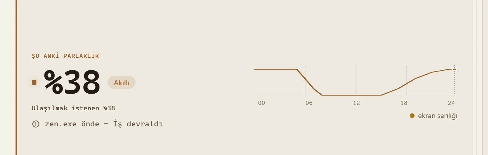
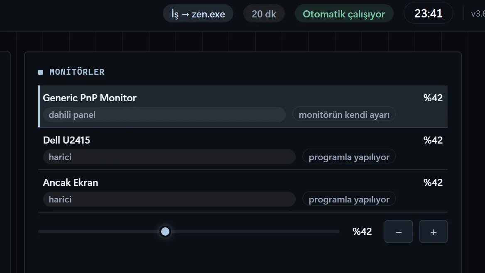
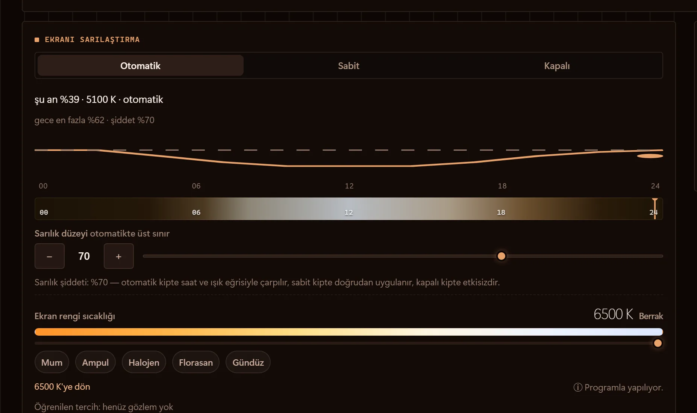
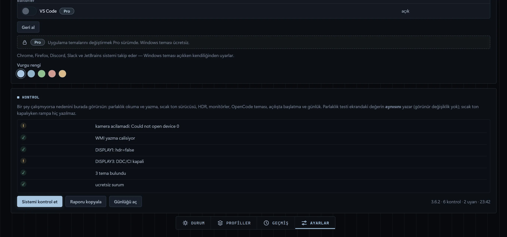

Oda karanlıkken ekran da karanlık olmalı.
Kamera ortam ışığını ölçer. Parlaklık ve sıcak ton bu ölçüme göre ayarlanır; gece yarısı beyaz bir sayfa gözünü yakmaz.
- Kamera görüntüsü diske yazılmaz
- Hesap açılmaz
- Telemetri yok
- GPL-3.0

Durum ekranı. Üstte gün boyunca değişen sıcak ton eğrisi, solda o anki parlaklık.
- şu an
- 21:04
- sıcak ton
- %55
- renk sıcaklığı
- 4600 K
Gün boyunca ne değişir
Aynı gün, dört farklı saat. Değerler varsayılan ayarlarla hesaplanır.
-
Perde aralanırken
Işık azken parlaklık düşük kalır. Ton şiddeti %39'a çıkar; ekran yumuşak başlar.
-
Gündüz
Eğri sıfıra iner, sıcak ton kapanır. Renkler 6500 K'de kalır, parlaklık gündüz tavanına yaklaşır.
-
Ton ısınır
Şiddet %27'ye tırmanır. Ekran kararmadan renkler sıcak tonlara kayar.
-
Gece tavanı
Eğri %88'e çıkar, tavanla %62 uygulanır. Ekran karanlık ama okunur kalır.
- gece tavanı
- %62
- gece rengi
- 4300 K
- boşta dönüşü
- 3,5 sn
Ekranın kendisi
Aşağıdakiler tanıtım görseli değil, uygulamanın kendi ekranları.






Neye dokunmaz
Kurallar her durumda önde gelir; bağlı bir profil bile bunları ezemez.
Dokunur
- Duraklatma yoksa ve ekran açıksa parlaklığı ayarlar.
- Sarılık kapalıysa renk dengesine dokunmaz.
- Bir monitör DDC/CI'yi reddederse onu atlar, diğerlerini sürer.
Dokunmaz
- Oyun öndeyken tur dondurulur.
- Video oynatıcı öndeyken dondurulur.
- Tam ekran bir uygulama listede değilse durur.
- PDF okuyucu öndeyken dondurulur.
- Ekran kilitliyken hiçbir şey yazılmaz.
Yedi şey yapar
Hepsi aynı turda, dakikada bir. Ayrı servis yok, ayrı süreç yok.
-
Işığı kamerayla okur
Kare başına yalnız ortalama parlaklık ve ton çıkarılır. Kamera meşgulse saat moduna düşer.
-
Gün eğrisi ve gece tavanı
Şiddet 11 çapa noktasından hesaplanır. 23:00'te tepe %88, uygulanan %62.
-
Sıcak ton
6500 K'den 3000 K'ye, 100 K adımlarla. Ekranı karartmadan renkleri kaydırır.
-
Kontrast kapısı
Tema dosyaları WCAG 2.1 ile ölçülür; okunaksız çıkan tema otomatik seçimde uygulanmaz.
-
Profiller
Ücretsizde üç, Pro'da altı. Bir profili exe adına bağlayabilirsin.
-
Harici monitörler
Dahili panel WMI, harici ekran DDC/CI ile okunur. Yazma Pro lisansla açılır.
-
20-20-20 ve boşta dönüşü
Uyarı bir kez çıkar, onaylanana kadar tekrarlamaz. Boşta parlaklık düşer, dönüşte 3,5 saniyede geri gelir.
Kurulumda ne olur
- Kurulum
- NSIS setup, x64, kullanıcı kapsamı. Yönetici izni istemez.
- İmza
- Authenticode imzası yok. SmartScreen "bilinmeyen yayıncı" diyebilir; "Ek bilgi → Yine de çalıştır" gerekir.
- Bütünlük
- Her sürümde .sha256 var; Get-FileHash ile doğrulanır.
- Güncelleme
- Uygulama içi. Paket minisign ile imzalı ve indirmede doğrulanır.
- Gizlilik
- Kamera görüntüsü yazılmaz, ağa gitmez. Telemetri ve hesap yok.
- Kaldırınca
- Renk dengesi geri yüklenir; sıcak ton kapalıyken de kalibrasyon geri gelir.
Ücretsiz ve Pro
Ücretsiz sürüm süreli deneme değil, çalışan bir uygulama. Pro profil sayısını ve harici ekranları açar.
Ücretsiz
- Işığa ve saate göre parlaklık
- Otomatik sıcak ton ve gece tavanı
- OpenCode teması ve Windows sistem teması
- Üç profil
- Kontrast kapısı
- 20-20-20 hatırlatması
Pro
- Altı profil
- Harici monitör parlaklığı (DDC/CI)
- Harici monitöre sıcak ton
- Uygulamaya bağlı profil ve uygulama başına tema
Pro fiyatı henüz belirlenmedi. Uygulamadaki "Pro'yu al" düğmesi şimdilik proje sayfasına gider.
Sorular
Kamera ne görüyor, nereye gidiyor?
Her ölçümde birkaç kare okunur ve yalnız ortalama parlaklık ile ton çıkarılır. Görüntü diske yazılmaz, ağa gönderilmez. Kare kaydı yoktur.
Pili ne kadar tüketiyor?
Tur dakikada bir koşar, kamera en fazla beş dakikada bir açılır. Pil düştükçe aralık uzar: %30 altında 5 dakika, %20 altında 10, %10 altında 20, altında 30.
HDR açıkken parlaklık neden çalışmıyor?
Bazı monitörler HDR açıkken DDC/CI parlaklığını reddeder. Uygulama bunu hata metninde söyler; HDR'ı kapatmak genelde çözer.
Harici monitörüm listede ama ayar dönmüyor.
DDC/CI monitörün kendi menüsünden kapalı olabilir ya da kabloda taşınmıyor olabilir. Ücretsiz sürümde yazma kapalıdır; okuma ve listeleme açıktır.
Oyun oynarken ekranı değiştirir mi?
Hayır. Oyun, video ve PDF öndeyken tur dondurulur. Tam ekran bir uygulama listede değilse de dondurulur.
Nasıl kaldırırım?
Windows ayarlarından kaldırılır. Kaldırmadan önce renk dengesi geri yüklenir.
Uygulama İngilizce mi?
Şu an yalnız Türkçe. Bu site iki dilli; uygulama arayüzü Türkçe.
Kur, unut.
İlk tur açılışta koşar. Sonrasında dakikada bir ölçer, karar verir, uygular.